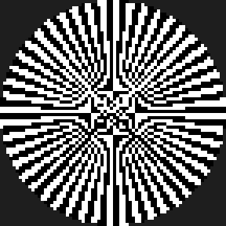
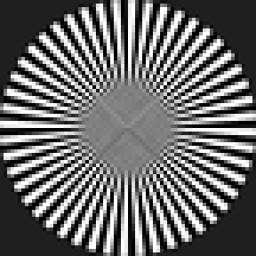
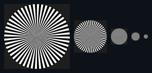

Nearest (Point)
보간 없음 · 또렷한 픽셀
가장 가까운 텍셀 하나를 그대로 씁니다. 확대하면 네모난 픽셀이 유지됩니다.
- 픽셀아트, 도트 UI, 값이 흐려지면 안 되는 데이터/LUT
- 일반 3D 표면(계단·반짝임)
텍스처를 화면에서 작게 그릴 때 원본을 그대로 샘플하면 반짝임(에일리어싱)이 생깁니다. 밉맵(미리 줄여둔 축소본)과 필터링(주변 텍셀을 섞는 방식)이 이걸 해결합니다. 이 문서는 밉/필터가 무엇을 언제 하는지, 언제 꺼야 하는지 실측 이미지와 함께 정리합니다.
| 필터 | 보간 범위 | 밉 사용 | 비용 | 대표 용도 | 평가 |
|---|---|---|---|---|---|
| Nearest (Point) | 보간 없음 (가장 가까운 1텍셀) | 선택 | 최저 | 픽셀아트·데이터·LUT | 용도 한정 |
| Bilinear | 한 밉 안에서 4텍셀 | 단일 밉 | 낮음 | 일반 확대(magnification) | 기본 |
| Trilinear | 이웃한 두 밉 사이 보간 | 2개 밉 | 중간 | 밉 경계 이음새 제거 | 축소 매끈 |
| Anisotropic 2×~16× | 비스듬한 방향으로 여러 샘플 | 밉 + 이방성 | 높음(배수) | 바닥·도로 등 경사면 | 경사 선명 |
아래는 같은 고주파 패턴을 화면에서 작게 그릴 때의 차이입니다. 왼쪽은 밉/필터 없이 원본에서 한 점씩 집어온 결과(포인트 샘플), 오른쪽은 주변을 평균낸 결과(밉맵이 하는 일)입니다.


밉맵은 원본을 절반씩 줄인 축소본들을 미리 만들어 함께 저장합니다 (512→256→128→…→1). GPU는 픽셀이 화면에서 차지하는 크기에 맞는 밉 레벨을 골라 씁니다.

1/4 + 1/16 + 1/64 + … ≈ 1/3입니다.
즉 밉을 켜면 텍스처 메모리가 대략 1.33배가 됩니다. 반짝임 제거·캐시 이득에 비하면 보통 남는 장사입니다.
가장 가까운 텍셀 하나를 그대로 씁니다. 확대하면 네모난 픽셀이 유지됩니다.
주변 4텍셀을 섞어 확대 시 부드럽게 만듭니다. 단, 밉 레벨이 바뀌는 경계에서 이음새가 보일 수 있습니다.
Bilinear에 더해 이웃한 두 밉 레벨 사이도 보간합니다. 밉이 전환되는 지점의 딱딱한 경계선을 없앱니다.
비스듬히 보이는 표면은 픽셀 발자국이 길쭉합니다. 그 방향으로 여러 번 샘플해 멀어지는 바닥·도로를 선명하게 유지합니다.
GPU가 고른 밉 레벨을 살짝 밀어주는 값이 밉/LOD 바이어스입니다.
여러 이미지를 한 장에 모은 아틀라스는 낮은 밉에서 옆 칸 색이 타일 경계로 번져 이음새가 생깁니다. 칸마다 여백(패딩)을 주거나 텍스처 배열(array)을 쓰세요.
잎·철망 같은 컷아웃 알파는 밉을 내려갈수록 얇아져 사라집니다. alpha-to-coverage나 커버리지 보존 밉 생성 옵션으로 두께를 유지하세요.
선명함을 노린 음 바이어스는 반짝임을 되살립니다. 디테일과 안정성의 균형을 잡으세요.
일부 파이프라인은 밉 생성 품질이 크기·설정에 민감합니다. 또 데이터 맵은 Linear에서 밉을 만들어야 값이 왜곡되지 않습니다(색공간은 채널 패킹 가이드 참고).
멀리서(축소) 볼 때만 적절히 부드러워지고, 가까이(원본 크기)선 그대로 선명합니다. 흐릿하다면 보통 Aniso 부족이거나 양 바이어스 탓입니다.
네. DDS·KTX2 같은 컨테이너는 밉 체인 전체를 담습니다. 오프라인에서 좋은 필터로 밉을 구워두면 로딩도 빠르고 품질도 안정적입니다(컨테이너 가이드 참고).
비용이 배수라 무조건 최대는 낭비입니다. 바닥처럼 경사가 심한 표면에만 높이고, 정면으로 보는 표면은 낮춰도 차이가 거의 없습니다.
메모리는 약간 줄지만, 축소 시 캐시 적중률이 떨어져 오히려 느려지고 반짝입니다. 월드 텍스처는 켜두는 게 보통 이득입니다.